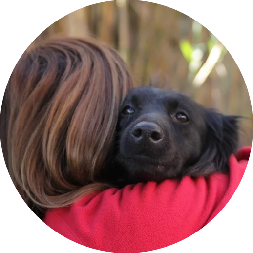

¿Como puedes contactarnos?
Somos una ONG sin fines de lucro, dedicada al rescate, cuidado y adopcion de animales domesticos. Si deseas adoptar, colaborar o reportar un animal en situacion de abandono, no dudes en contactarnos.
Si queres adoptar completa el formulario
Adopta

Información de Contacto
Dirección: Tte. Manuel Origone 151, Villa Tesei, Hurlingham, Buenos Aires, Argentina
Teléfono/s:
- Area Administrativa
- 011-7105-7437
- Area de Gestion y Organizacion
- 011-3111-5592
- Area Legales
- 011-4030-2128
Correo Electronico Institucional:
info@proyecto4patas.org
Correo Electronico Institucional:
Conocé más
Emergencias
En caso de emergencia o maltrato animal, contacta al 147 (CABA) o denuncia al Ministerio Público Fiscal